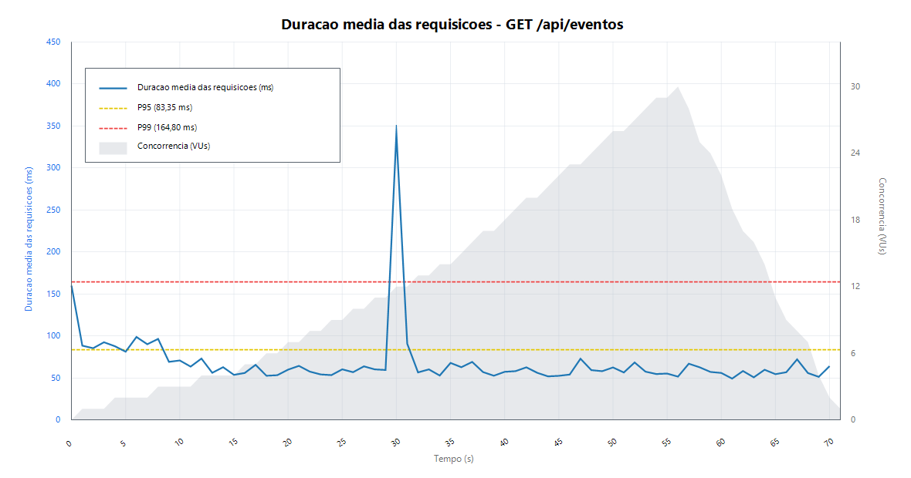
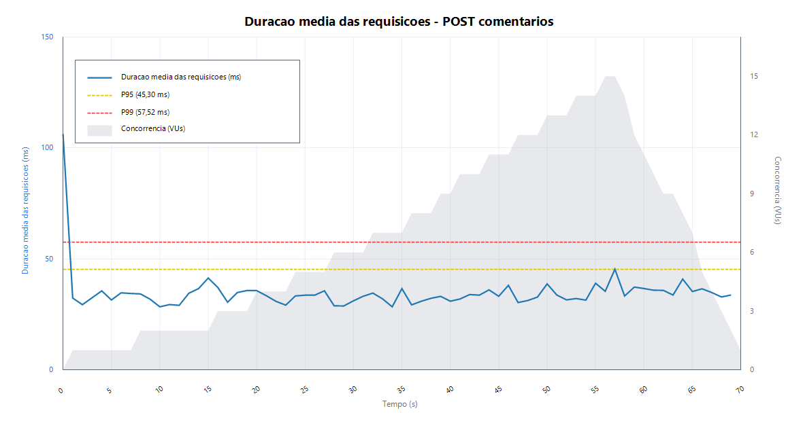

Relatório técnico
Medições de SLA - Testes de Carga do ChegAê
Resultados dos testes k6 aplicados a dois serviços internos do backend, incluindo uma operação de escrita no banco de dados.
Resumo executivo
Os testes avaliaram a evolução de latência, vazão, concorrência e taxa de erro conforme a carga aumentou em estágios. A suíte cobre a listagem de eventos, uma operação de leitura com retorno de dados agregados, e a publicação de comentários, uma operação de escrita no PostgreSQL.
Ambiente de execução
| Item | Configuração observada |
|---|---|
| Sistema operacional | Microsoft Windows 11 Pro 10.0.22631, PowerShell |
| Hardware local | AMD Ryzen 5 2400G, 15,9 GB RAM |
| Backend | Spring Boot 3.3.0, Java 17, Maven |
| Banco de dados | PostgreSQL 15 executado via Docker Compose |
| Serviço auxiliar | GraphDB 10.6 executado via Docker Compose |
| URL base da API | http://localhost:8080/api |
| Observação | Os resultados refletem ambiente local de desenvolvimento e podem variar conforme máquina, containers, volume de dados e processos em execução. |
Serviços testados
| Serviço | Operação | Endpoint | Script k6 | Relatório HTML |
|---|---|---|---|---|
| Listagem de eventos | Leitura | GET /api/eventos | tests/load/eventos-feed.js | docs/sla/reports/eventos-feed-dashboard.html |
| Publicação de comentários | Inserção | POST /api/eventos/{id}/comentarios | tests/load/comentarios-write.js | docs/sla/reports/comentarios-write-dashboard.html |
Resultados consolidados
| Métrica | GET /api/eventos | POST comentários |
|---|---|---|
| Latência média | 62,81 ms | 34,66 ms |
| p90 | 73,79 ms | 41,56 ms |
| p95 | 83,05 ms | 45,30 ms |
| Vazão média | 19,35 req/s | 5,86 req/s |
| Total de requisições HTTP | 1375 | 412 |
| Escritas no corpo principal do teste | - | 410 |
| Usuários virtuais máximos | 30 | 15 |
| Taxa de erro HTTP | 0,00% | 0,00% |
Configuração de carga
Listagem de eventos
- Carga leve: 15s até 5 VUs.
- Carga média: 20s até 15 VUs.
- Carga alta: 20s até 30 VUs.
- Redução gradual: 15s até 0 VUs.
Publicação de comentários
- Carga leve: 15s até 3 VUs.
- Carga média: 20s até 8 VUs.
- Carga alta: 20s até 15 VUs.
- Redução gradual: 15s até 0 VUs.
Arquivos backend envolvidos
| Serviço | Arquivos de implementação |
|---|---|
| Listagem de eventos | EventoController.java, EventoService.java, EventoRepository.java, InscricaoRepository.java, ComentarioRepository.java |
| Publicação de comentários | EventoController.java, ComentarioService.java, EventoService.java, ComentarioRepository.java, InscricaoRepository.java, EventoRepository.java, UsuarioRepository.java |
Gráficos de evolução temporal
Os gráficos usam a saída JSONL do k6 para plotar a duração média das requisições por segundo, linhas globais de p95/p99 e a concorrência em usuários virtuais ao longo do teste.

Figura 1 - Latência e concorrência ao longo do teste de leitura GET /api/eventos.

Figura 2 - Latência e concorrência ao longo do teste de escrita POST /api/eventos/{id}/comentarios.
Métricas por intervalo
As séries temporais JSONL do k6 foram agregadas nas granularidades solicitadas: 1s, 5s, 10s, 30s e 1min. O arquivo completo está em docs/sla/reports/interval-metrics.md.
Listagem de eventos
| Granularidade | Latência média | p95 médio | Vazão média | Concorrência máx. | Erro médio |
|---|---|---|---|---|---|
| 1s | 67,45 ms | 82,97 ms | 19,63 req/s | 30 | 0,00% |
| 5s | 66,87 ms | 111,45 ms | 19,63 req/s | 30 | 0,00% |
| 10s | 66,09 ms | 102,07 ms | 19,63 req/s | 30 | 0,00% |
| 30s | 60,83 ms | 81,12 ms | 15,27 req/s | 30 | 0,00% |
| 1min | 59,73 ms | 78,36 ms | 11,45 req/s | 30 | 0,00% |
Publicação de comentários
| Granularidade | Latência média | p95 médio | Vazão média | Concorrência máx. | Erro médio |
|---|---|---|---|---|---|
| 1s | 35,38 ms | 39,36 ms | 6,03 req/s | 15 | 0,00% |
| 5s | 35,29 ms | 49,44 ms | 5,86 req/s | 15 | 0,00% |
| 10s | 35,26 ms | 57,23 ms | 5,86 req/s | 15 | 0,00% |
| 30s | 34,88 ms | 46,12 ms | 4,56 req/s | 15 | 0,00% |
| 1min | 35,22 ms | 43,76 ms | 3,42 req/s | 15 | 0,00% |
Análise por serviço
Listagem de eventos
O endpoint de leitura sustentou a subida até 30 usuários virtuais sem falhas. A latência média ficou próxima de 63 ms e o p95 ficou em 83,05 ms no ambiente local. A vazão acompanhou o crescimento de VUs e reduziu naturalmente na etapa de ramp-down.
- Hipótese 1: a listagem retorna todos os eventos sem paginação, o que pode degradar a resposta conforme a tabela cresce.
- Hipótese 2: a montagem do DTO pode realizar consultas auxiliares de inscrições e comentários por evento.
- Hipótese 3: o payload aumenta com a quantidade de comentários retornados em cada evento.
- Hipótese 4: a ordenação por data de criação depende do volume e dos índices disponíveis na tabela de eventos.
Publicação de comentários
O endpoint de escrita sustentou 15 usuários virtuais sem erro HTTP. Foram realizadas 410 escritas no corpo principal do teste, todas com prefixo k6-test, e os dados de carga foram removidos do banco após a medição local.
- Hipótese 1: cada comentário passa por validações de usuário, evento e inscrição antes da persistência.
- Hipótese 2: após salvar o comentário, o endpoint retorna o evento completo atualizado.
- Hipótese 3: escritas concorrentes no mesmo evento podem disputar conexões do pool e recursos do PostgreSQL.
- Hipótese 4: a resposta tende a crescer conforme mais comentários ficam associados ao mesmo evento.
Comandos de reprodução
cd C:\ChegaAe docker compose -f .\infra\docker-compose.yml up -d cd C:\ChegaAe\backend mvn spring-boot:run
cd C:\ChegaAe $env:BASE_URL = "http://localhost:8080/api" .\.tools\k6\k6.exe run .\tests\load\eventos-feed.js .\.tools\k6\k6.exe run .\tests\load\comentarios-write.js
$env:BASE_URL = "http://localhost:8080/api" .\.tools\k6\k6.exe run --out json=docs/sla/reports/eventos-feed-timeseries.jsonl .\tests\load\eventos-feed.js .\.tools\k6\k6.exe run --out json=docs/sla/reports/comentarios-write-timeseries.jsonl .\tests\load\comentarios-write.js
Relatórios gerados
docs/sla/reports/eventos-feed-dashboard.htmldocs/sla/reports/comentarios-write-dashboard.htmldocs/sla/reports/eventos-feed-latency.pngdocs/sla/reports/comentarios-write-latency.pngdocs/sla/reports/interval-metrics.mddocs/sla/medicoes-sla-testes-carga.pdf